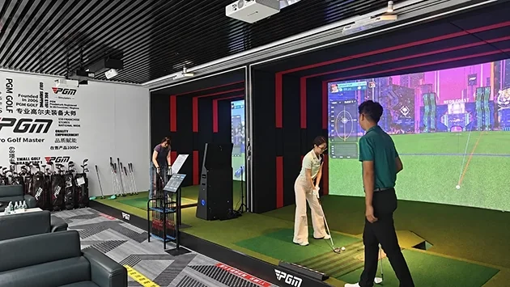

Golf coaching and training
Plan around the measurements, practice modes and player access your coaches need. Confirm supported data, software functions and permitted use before ordering.
Start with the experience you want to offer, then work through the room, equipment and daily operation. Discuss a PGM P8 setup for golf training, indoor play or a hospitality venue.

Plan around the measurements, practice modes and player access your coaches need. Confirm supported data, software functions and permitted use before ordering.
Consider player turnover, course and game access, shared equipment and the space needed around each bay. Review connection requirements for online play.
Define the guest experience, supervision, surrounding circulation and local service arrangements. Decide whether the bay will be a dedicated facility or part of a wider venue.
Use the space inside finished walls and below the lowest obstruction. Allow for the selected equipment, player movement and safe circulation outside the playing zone.
The published PGM single-screen standard reference is 6.0 × 4.0 × 3.0 m (depth × width × height). Multiple bays, seating and circulation need a separate layout assessment.
Open the room-size planning guide →Review ceiling and screen mounting, power, network access, lighting, acoustics and access for delivery with your local professionals. The final plan should identify work supplied by PGM and work carried out locally.
Compare the detector, software, screen, enclosure, playing surfaces, computer, projection and control equipment as one configuration.
Review the P8 configuration checklist →| Area | Decision to document |
|---|---|
| Software rights | Whether the chosen software permits your planned commercial use; courses, multiplayer and recurring fees. |
| Player access | Left- and right-handed use, booking or session workflow, guest supervision and setup between sessions. |
| Daily care | Checks for playing surfaces, screen condition, sensors and calibration; approved cleaning and maintenance instructions. |
| Support and downtime | Diagnostic process, support hours and time zone, replacement-part handling and local service responsibilities. |
| Delivery and commissioning | Transport terms, import responsibilities, room readiness, installation tasks and acceptance checks. |
| Project budget | Hardware, software, site work, freight, taxes, installation and ongoing operating costs. |
A venue’s revenue and return on investment depend on local demand, pricing, occupancy and operating costs. This page does not promise revenue, utilization or a payback period.
Provide the destination, venue type, dimensioned plan, photos and intended number of bays. Note any access, ceiling or operating constraints.
Work through the hardware, software rights, room requirements and installation responsibilities. Separate required items from optional additions.
Request an itemized quote and written delivery, commissioning and support terms. Identify the local work needed before equipment arrives.
Yes. Contact PGM with your intended application, site plan and operating needs. The equipment, software rights and support scope need to be confirmed for the project.
Bay count cannot be determined from floor area alone. Clear width, depth, height, obstructions, circulation and the selected configuration must be assessed together.
Ask for the installation scope and local responsibilities in writing. A destination country on an enquiry is not confirmation of a local installer or overseas service network.
Build a separate business model using your own local prices, demand, opening hours and operating costs. Equipment selection and revenue assumptions should be reviewed separately.
Share your location, intended use and room plan. Tell us how many bays you are considering and who will operate the equipment.
PGM is the company's own brand. This website is operated by 佛山市顺德异邦高尔夫用品有限公司.
Your details are used to respond to this inquiry. Please do not include sensitive personal information.
With your permission, we use Google Analytics to understand website visits and improve our content. You can contact us without accepting analytics.
This website is operated by 佛山市顺德异邦高尔夫用品有限公司, owner of the PGM brand. Contact: tracy@pgmgolf.com.
Essential delivery, security and form services support this website. Details you submit are used to handle your enquiry. If you accept analytics, Google processes visit and interaction data as described in its Privacy Policy. Our custom events exclude your name, email, company and message.
Only predefined marketing channel labels are retained in this tab for up to 30 minutes after analytics consent. Arbitrary query parameters and fragments are removed from analytics page URLs. Your analytics choice is saved in this browser for 180 days. Use the footer to change it; declining stops collection and clears this site's analytics cookies and stored campaign labels.